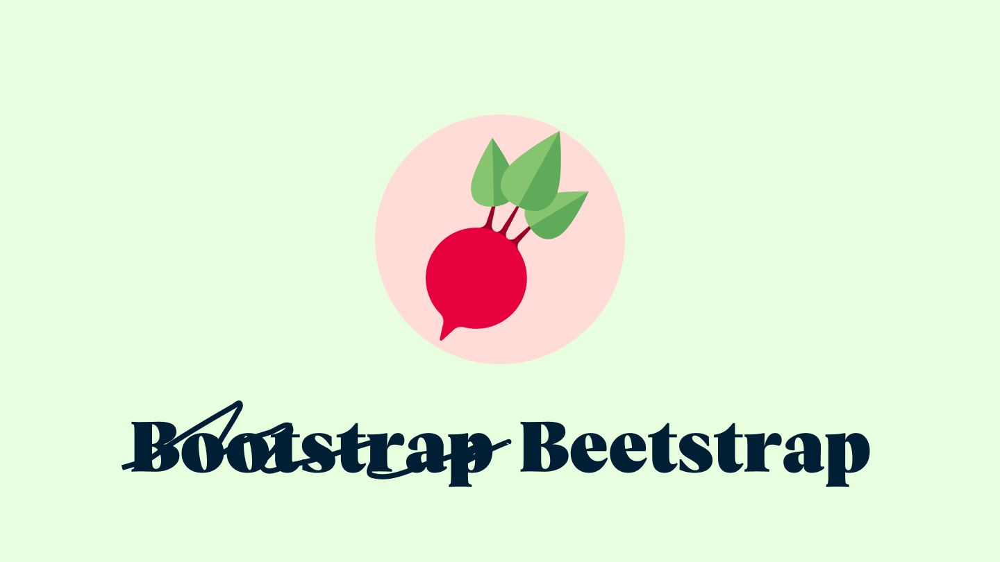
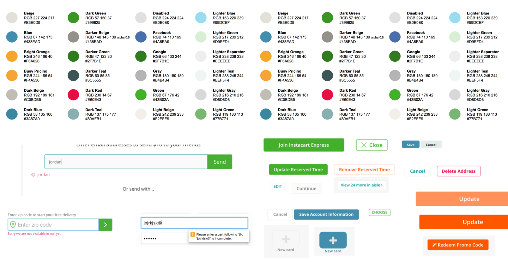
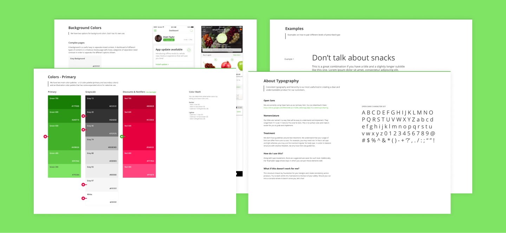
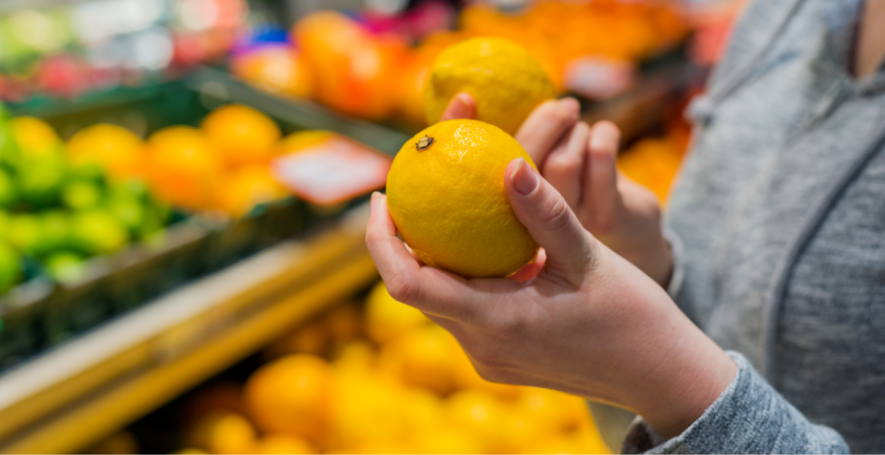
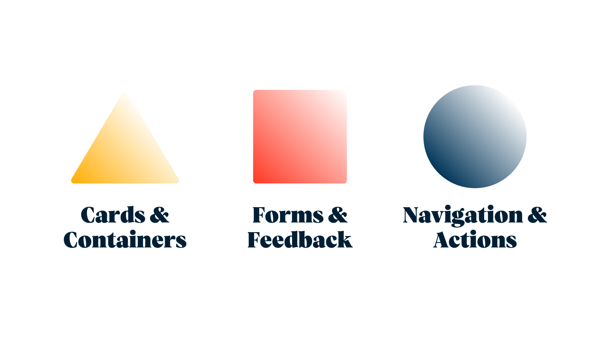
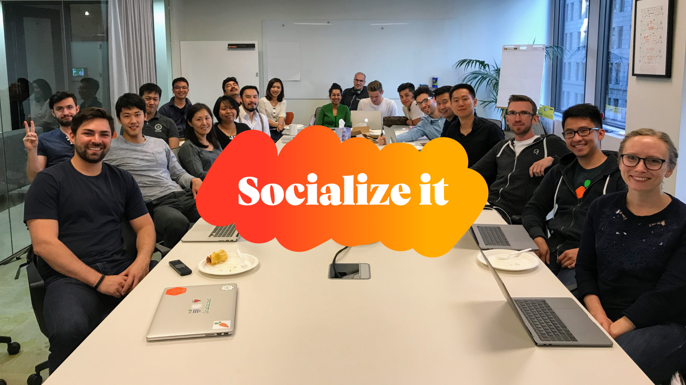

Instacart Snacks
A design system that delivers groceries
2017 · Design SystemsIn 2017, Design Systems were just gaining steam within the design industry. At Instacart, we had worked off of simple brand guidelines and basic style guides I had created between projects, but the team was growing and our ambitions were growing too. Each page varied widely as we built more and more product. We needed a way to make sure we weren't shuffling users from one designer's world to another's.
Background
Our first attempt at a unified design system (even though we hadn't called it that) was back in 2015. The company was small but we were beginning to have multiple engineers and designers touching parts of the product. So how do you solve that quickly? We forked Bootstrap, modified it heavily to our use cases (and named it Beetstrap for kicks). That had gotten us far. But designers wanted to work to evolve our design language. After a few years, it was showing it's age visually and we hadn't put a lot of time in educating a growing team about how to use it. After a while it became "that place we pull icons from". We knew we had to push further.
In 2017 another goal was coming into focus based on our sales numbers. In the past, we had set up our designers and web developers with simple, reusable components. But our iOS and Android developers were not given that same time and attention. Since our first attempt at a unified system, our mobile app sales were growing drastically every year and were finally beginning to cross the order numbers we were seeing from desktop computers. So we set out to make this mobile-centric as well.
The Plan
Up front, I the team needed to agree to a basic plan that could get us to our goal.
1. Set a deadline
At this point we had seven designers and each of them was working on tons of projects across the organization. So we had to make sure this work was getting done while also ensuring we couldn't block all of engineering. So setting a deadline of 3 months to design and present the new system was a number we were able to all agree on. The designers and engineers who were interested in contributing would save a portion of their week and put it towards this work.
2. Catalog everything
To start the process off, we first had to make sure we all knew what we had. We budgeted two weeks to give each designer time to look through everything we already had, screenshot and save each example, and then bring it to the table to discuss approach. This would be essential when it came time to replace things, understand use cases for each component, and also helped us make our case that the project was important.
The screenshot above shows a few notable examples. At this point, we had around 10 different kinds of buttons, inputs that worked differently depending on which team built them (some showing a frowny face with your input if you did it wrong 😱), and a nonexistant color system showing off hundreds of unique hex codes. We clearly had some work to do.
3. Make a wish list along the way
Not only was it important to look at what we already had, but we also need to make sure we were moving towards the future of Instacart. As we documented our existing components and patterns we were also taking notes on pros/cons, how components performed in research, and our upcoming needs (and wants). These notes became a blueprint for the work ahead.
4. Build foundations
As a team, we needed to make sure everyone was in agreement on the building blocks for any good design system: Spacing, Color, and Typography.
These tend to be the most subjective (e.g. 's 15px spacing versus Google's power of 2's come down to perference) so we made sure to tackle them straight away. Everything else would be built upon these foundations.
5. Keep the use case close
This is going to sound a bit obvious, especially to a fellow designer reading this. Despite that, it bears repeating that we needed to make sure with each choice we made in our new design system's creation needed to support our use case above all else: shopping for groceries.
In our previous attempts, we relied heavily on off-the-shelf options and most of those had their own ideas about things like responsiveness. On a social network where the typical piece of content was some text and maybe a photo, using a fluid layout based on percentages work really well. For us, we needed to make sure everything revolved around product cards which are rigid, information-dense, and image-forward.

That also applied to our shoppers using our software in the store. Would it be nicer to use thin, modern type and forgo contrast in favor of a sleeker design? Not when a shopper was standing in the grocery aisle under fluorescent lights with wet produce in the left hand while they use our app with the right. We could never assume that shoppers or customers were ever in our perfect conditions we often design for. Busy moms, hectic stores, and the elderly needed to be centered when making decisions while still balancing those needs with creating a modern brand.
To make the use case concrete as we worked, we captured some high-level "core" flows. These were the aspects that, without them, Instacart wouldn't be able to function. Flows like search, checkout, order status, shopper staging, and more were captured and put in an accessible place so we could reference them as we worked.
6. Split up the work
Now that we had some solid foundational pieces, we needed to get it done. The best way to tackle this was to split our designers up into 3 groups. Some designers volunteered for certain groups because they had domain knowledge in that area.
7. Test, socialize, test some more
The real work began by each team grabbing a few components (and later patterns) each week, working on them based on our collective notes, and then bringing them to the table for a weekly meeting and design review.
Some components were difficult for consensus once every part of the organization's needs were considered. (e.g. Did we really need a special button just for Coupons?) If the entire team couldn't approve a first draft of the component that week, it would go back to the team to work on more. Some components came back week after week for a month in order to get to the level of polish we wanted from them.
Components designed on their own can be dangerous. We had to make sure when our proposed changes were more that pure consolidation, we based our changes in research. We made sure to engage customers on our changes when anything felt risky and new.
The last large risk to this approach was making sure everything fit together when we had so many different hands working on it. Having the common foundations agreed upon helped mitigate a lot of ache. But, everything still had to come together to form a complete picture. We used our core flows to place new components into as we went. At every point, we had a concise before and after of the app for that gut check.
To make sure we got as many eyeballs on the new system as possible, we made sure we included the team that would be using this thing into our process as much as we could. We had guests in design reviews, We posted work to slack. we hung stuff up so folks would walk past it. Our best ideas was a gallery day. we got a bunch of wine and cheese, played music. Printed out work and stood besides it. we invited the entire org to come by and look at everything and give feedback.Food and drinks are sometimes the best way to get people interested!